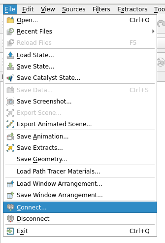
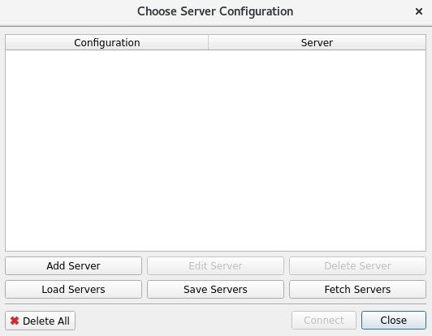
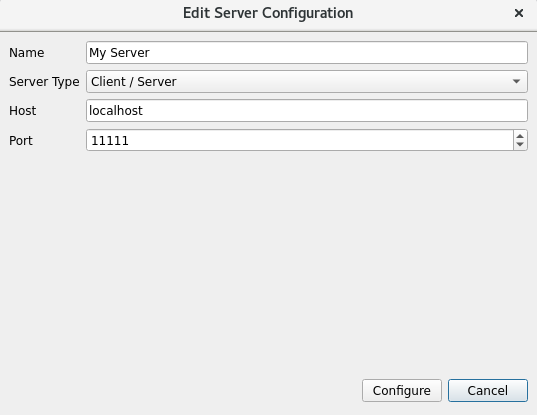

Setup Instructions¶
There are two tasks to complete in order to get set up with the WFA. First, the WFA library must be obtained. Due to export restrictions, the code is maintained on a private gitlab server. Follow the instructions in the Obtaining the WFA Code section. Second, the compilers necessary to run the code are proprietary to Cerebras Systems, Inc. The compilers are usually packaged with the hardware in singularity containers. The compilers necessary for the WFA have been integrated into version 1.8.0 and above in the SDK container.
Obtaining the WFA Code¶
This github repository contains documentation only. The full code repository is available here. To obtain access to the code, register on the MFiX website contact Terry Jordan at terry.jordan@netl.doe.gov to be added to the privet gitlab repository. This process has been adopted until NETL makes a determination about the export control nature of this work.
After being added to the repository, checkout the latest repo:
git clone https://mfix.netl.doe.gov/gitlab/tjordan/cerebrasdev.git
Running on Neocortex¶
Necortex is an NSF funded computer run by the Pittsburgh Supercomputing Center (PSC) and consists of a Superdome Flex and two CS-2’s (the system that contains a WSE). PSC runs regular user solicitations for time on Neocortex. NETL has been working with Cerebras and PSC to ensure the WFA can run on the Neocortex system.
The first thing to do is follow the instruction in the Obtaining the WFA Code section to get the repository for the WFA set up on Neocortex. If there is no special reason to use a different branch, checkout Master and make sure you pull the latest changes.
The next thing to do is set up the container that contains the proprietary Cerebras Containers. The WFA compiles against the Paint and Angler compilers using Make. The container you use will have to have this capability built in. According to Cerebras, the SDK container at 1.8.0 and later will have this built in. If the container installed on the hardware is a lower version number, then one will have to obtain a custom built container from Leighton Wilson at cerebras (reach out to him on the Neocotex Slack channel). As of the writing of this version of the documentation (3/24/23), Neocortex has not upgraded to 1.8.0. Thus, users will have to generate a binary in the custom container and then submit the run on hardware using the latest installed container on Neocortex.
Interactive Singularity¶
Throughout the development and run cycle, you will need generate images inside a singularity container. While it is possible to do this in batch mode, it is more convenient to launch an interactive singularity environment as several python packages have to be installed and it can waste a lot of time to run in batch mode.
Because singularity is locked down, installing python packages in the normal way is not possible. To get around this,
we create a directory which will contain python packages and then set the .local path in the home directory to
this location.
mkdir <path_to>/Cerebras-extra-python-packages
We also link the path to the WFA repository to a root level folder /cerebras_dev inside the container. If
<path_to_repo> is set correctly, then a cd cerebras_dev inside the container should take you to the
top level directory of the WFA repository where the README.md file exists. <path_to_sif_file> is either
the path to a custom sif container or the default environment variable to the installed SDK container on Neocortex
depending on if the installed container is at/above 1.8.0.
singularity run -B <path_to>/Cerebras-extra-python-packages:$HOME/.local -B <path_to_repo>/:/cerebras_dev <path_to_sif_file>
Because we have to use the python installed in the container, if you use a python manager like Conda, you will have
to deactivate it so that python points to the containers python. For conda this is simple:
conda deactivate
Once this is set up, leave the terminal open so you can do development and generate simulator/hardware images.
Checking Installation¶
Now that the container environment is set up, it is good to check that the WFA is working correctly. Inside the terminal with the singularity container running:
cd /cerebras_dev
Then launch the tests by:
python build_and_test.py
This should install all the python dependencies and start launching the tests. You should see output similar to this:
# lots of install messages
Finished processing dependencies for WSE-Field-Equations==0.0.1
test_FDNS_bc_Vz : pass
test_scalar_array_mul : pass
# lots more tests
All tests should pass if installed correctly and the branch you are on shows a pass in the gitlab runner in the online repository. It may take 5-10 min to run all the tests depending on how many are checked in.
Launching Portrait from Neocortex¶
If doing development on Neocortex, which is headless, one will want to launch the visual debugging tool, Portrait.
Navigate to the input file directory and run the input file with one of the debug level options -dl <1,2,3>,
all of them will launch the Portrait web server for you:
python <input_file>.py -dl <1,2,3>
The last line in the console after running the debug option will look something like this:
http://br023.ib.bridges2.psc.edu:8080/paint.html
This is the server to connect to in the format of:
http://<server>:<port>/paint.html
From your local machine ssh into Neocortex:
ssh -L <port>:<sever>:<port> <username>@bridges2.psc.edu
Launch web browser (firefox and chrome work the best) and navigate to:
localhost:<port>/paint.html
Compiling for Hardware Neocortex¶
By default the WFA will compile and run in Simfabric (the Cerebras built hardware simulator). To to compile
hardware, specify the hardware input name (-hin <hardware_run_name>) and the make goal as bench.img
(-mg bench.image).
python <run_name>.py -hin <hardware_run_name> -mg bench.img <additional_args>
This will generate a tar file that contains the image (binary) that is ready to run on hardware
<hardware_run_name>.tar.gz. The next thing to do is move the tar file into the WFA utility directory:
mv <hardware_run_name>.tar.gz /cerebras_dev/WSE_Field_Equation/util
The job can then be submitted to Neocortex through slurm. Make sure the <hardware_run_name> does not include
the .tar.gz extension is not included in the -c option. The -o <field_variable> option
specifies the name of the WSE_Array to save as output from the WSE.
(cd /cerebras_dev/WSE_Field_Equation/util; sbatch --nodelist=sdf-<1 or 2> neocortex_slurm_script_bash -c <hardware_run_name> -o <field_variable>)
Retrieving Data¶
On Neocortex, the fastest way to run is to move data off the network drives and onto the local SSD’s. The
neocortex_slurm_script_bash script will move the <hardware_run_name>.tar.gz file to the local drive
on the super dome flex at /local1/<project_name>/<hardware_run_name>. To access this data, log into the SDF
node:
srun --nodelist=sdf-<1 or 2> --pty bash
and navigate to the local storage
cd /local1/<project_name>/<hardware_run_name>
The results will be in a series .ckpt files. If the program ran successfully and got to the end, the
progend.txt file should have a 1 in it.
Saving time Dependent Data¶
Multiple checkpoints can be saved out in series as the calculations are completed. The WFA can be configured to write
out files from one loop starting at iteration <start_iteration> and writing out every <mod_iterations>.
To do this, the controller puts itself in a pause state and waits for the host
to check if it is ready to take data off. If it is, the host will issue a data retrieval command and get the data off
the WSE. This is a far from optimal solution for IO and currently uses a very slow debug interface. It will be
replaced with a different interface that puts the host in a wait to receive mode and uses the full 1.2Tb/s data link
to bring down frame save rates to a few milliseconds and not interrupt solution progress.
To enable this, the conditional_pause method in the loop context manager must be called.
with for_loop('time_march', args.time_steps) as time_march:
iter_counter[0] = iter_counter + 1
T[2:-2,0,0].push_to_host(args.start_iteration_push, args.modulo_iteration_push)
if args.add_time_pause > 0:
time_march.conditional_pause()
ns._fluid_iteration(save_debug_images=False, num_reduction_lim_its=nerr,
max_pseudo_its=max_pseudo_its, fluid_tol=nl_tol)
It is often beneficial to put this in a guard with a command line option set.
# Head of file
wse = WSE_Interface()
parser = wse.get_cmd_line_parser()
# Add Program Specific command line arguments
parser.add_argument("-ts", "--time_steps", help="specify number of time steps",
type=int, default=5)
parser.add_argument("-atp", "--add_time_pause",
help="adds a time march pause to save data", type=int,
default=-1)
# Some point after all the arguments are added
args = wse.get_available_cmd_args()
# Rest of problem setup
In this example, the program code would get compiled with a -atp 1 set on the command line and
-ts <max_time_steps>.
Then to launch the job on Neocortex, additional command line arguments would be set in the submission.
(cd /cerebras_dev/WSE_Field_Equation/util; sbatch --nodelist=sdf-<1 or 2> neocortex_slurm_script_bash -c <hardware_run_name> -o <field_variable> -s <start_iteration> -p <mod_iterations>)
This allows one to set up saving data over a given time period. For example setting <start_iteration> = 100,
<mod_iterations> = 10, and compiling with <max_time_steps> = 200 will output 11 .ckpt, equally
spaced at time steps between 100 and 200.
Converting Checkpoints to VTR¶
The resulting checkpoint need to be converted to be visualized. The process uses a post processing script, tovtkfromBin.py, to generate a vtkRectilinearGrid (VTR) file.
Copy the conversion script to you results directoy:
$ cp <WFA_Path>/WSE_Field_Equation/util/tovtkfromBin.py <Checkpoint_Location>
Run the script:
$ python ./tovtkfromBin.py <Checkpoint_filename> <Attribute_name>
ParaView Visualization¶
Paraview is post-processing visualization tool. It can be run locally or remotely. The local execution uses typical point and click operation. Client/Server mode is a more involved process.
Client/Server Mode¶
Login to Bridges2
$ ssh <username>@bridges2.psc.edu
Download the latest version of Paraview
$ wget https://www.paraview.org/paraview-downloads/download.php?submit=Download&version=v5.11&type=binary&os=Linux&downloadFile=ParaView-5.11.0-MPI-Linux-Python3.9-x86_64.tar.gz
Extract ParaView
$ tar -zxvf ParaView-5.11.0-MPI-Linux-Python3.9-x86_64.tar.gz
Check out a GPU node
$ ssh interact -p GPU-shared --gres=gpu:v100-32:1
Run ParaView server
$ <ParaView_Directory>/bin/pvserver
Get the port information from the console which will look something like this:
Waiting for client...
Connection URL: cs://v003.ib.bridges2.psc.edu:11111
Accepting connection(s): v003.ib.bridges2.psc.edu:11111
Client connected.
This is the server to connect to in the format of:
cs://<server>:<port>/
From your local machine use ssh to link the Bridges2 port to you local port:
ssh -L <port>:<sever>:<port> <username>@bridges2.psc.edu
On the local system, download and extract ParaView using the same process above. Run ParaView locally:
$ <ParaView_Directory>/bin/paraview
Use the ParaView GUI to connect to the server. File->Connect:
{kind=link}
Choose Server Configuration/Add a server:
{kind=link}
Edit Server Configuration:
{kind=link}
Use File->Open to open the VTR.
Useful Tools and Methods¶
Several runtime environments are headless which makes doing development work difficult. Here are a few useful tools to make this easier.
Custom Spyder IDE¶
NETL is maintaining a custom version of the Spyder IDE which supports syntax highlighting for WSE kernel code. Installation can be done with conda by following the instructions below:
Follow the instructions in the Obtaining the WFA Code section
clone the repository from the gitlab repository
check out the v.5.4.2_wse branch
navigate to the folder with the setup.py and env.yml files
run
conda env create -f env.yml --name spyderon linux orconda env create -f env_win.yml --name spyderon windowsrun
conda activate spyderrun
python setup.py installrun
spyderon linux orspyder.batin thepath/to/spyder/repository/scriptsdirectory in windows
sshfs¶
sshfs is very handy for doing remote development as it allows one to mount a remote directory over standard ssh interfaces. Follow the instructions here to get it set up. It has been tested and works with Neocortex. This will allow you to edit files remotely in whatever editor you choose. Once installed do the following:
Neocortex from Linux¶
First, make a directory to mount
sudo mkdir /mnt/<mount_name>
Next mount whatever directory you wish
sudo sshfs <user_name>@neocortex.psc.edu:<path/to/directory> /mnt/<mount_name>
Neocortex from Windows¶
Open the file browser
Right click on This PC
Select Map Network Drive…
Select a drive letter
Paste the following (with correct substitutions) in the Folder: text box
\\sshfs <user_name>@neocortex.psc.edu[\<path\to\directory>]
Pycharm¶
Pycharm is another IDE similar to Spyder. It has a useful feature in that it will render .rst files and has
some minimal word processing capabilities. This makes it very good for editing Sphinx documentation files.
To install:
get the latest community edition here.
untar the file
run with
sh <path_to_pycharm>binpycharm.sh